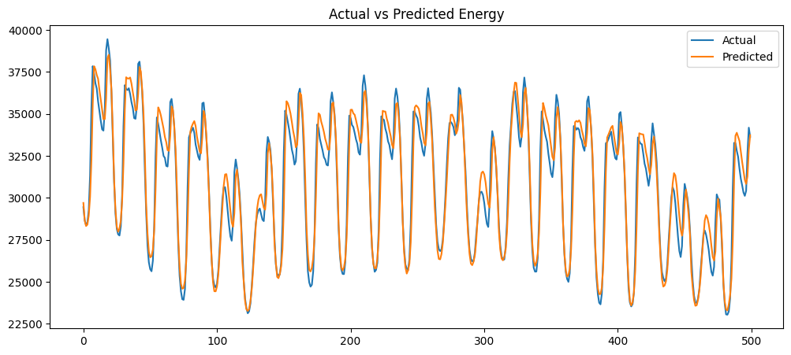
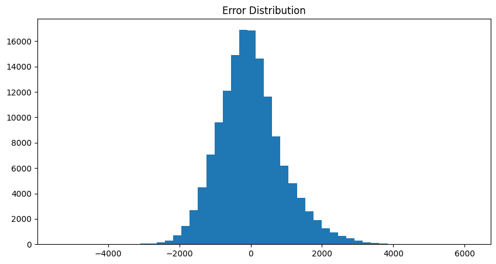
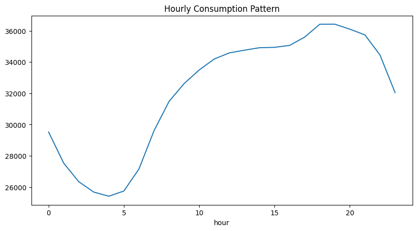

Ce projet a pour objectif d'étudier les comportements de consommation énergétique à partir de données horaires de charge électrique. Une approche de régression polynomiale a été utilisée afin de modéliser les relations non linéaires entre les variables temporelles et la consommation énergétique observée.
Les données proviennent du jeu de données PJME Hourly Energy Consumption et contiennent des mesures horaires de consommation électrique.
Nombre d'observations : 145,198
Nombre de variables : 12
Après le nettoyage et le prétraitement des données, plusieurs variables temporelles ont été extraites afin d'améliorer les capacités prédictives du modèle.
Les variables explicatives utilisées pour entraîner le modèle sont :
Ces variables permettent de capturer les effets liés aux heures de la journée, aux jours de la semaine, aux mois ainsi qu'aux tendances temporelles de la consommation électrique.
Les performances du modèle de régression polynomiale ont été évaluées à l'aide de plusieurs métriques statistiques.
Le coefficient de détermination R² mesure la proportion de la variance expliquée par le modèle. Plus sa valeur est proche de 1, meilleure est la qualité des prédictions.

Ce graphique compare les valeurs réelles de consommation électrique aux valeurs prédites par le modèle. Une proximité importante entre les deux courbes indique que le modèle reproduit correctement les variations de la charge énergétique.

L'histogramme des erreurs permet d'analyser les écarts entre les valeurs observées et les prédictions du modèle. Une distribution centrée autour de zéro suggère l'absence de biais systématique dans les prédictions.

Cette représentation met en évidence l'évolution moyenne de la consommation électrique selon l'heure de la journée. Elle permet d'identifier les périodes de forte demande énergétique ainsi que les périodes creuses.
Les résultats obtenus montrent que la régression polynomiale constitue une approche pertinente pour modéliser les comportements énergétiques non linéaires. Les variables temporelles extraites permettent de capturer une part importante de la variabilité de la consommation électrique.
Des améliorations futures pourraient inclure l'intégration de variables météorologiques, économiques ou démographiques afin d'accroître la précision des prédictions et d'enrichir l'analyse socio-énergétique.